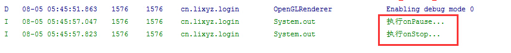
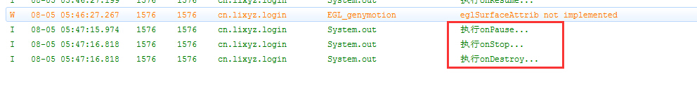

一.什么是Activity
Activity是Android应用程序核心组件中最基本的一个，是用户和程序交互的窗口，一个activity通常对应一个单独的视图，一个APP由一个或者多个activity构成，activity用于显示信息给用户，并且之间可以相互进行跳转，activity之间的跳转有返回值。
每一个activity都被定义为一个独立的类，他继承了Android中的android.app.Activity，在Activity类中将使用setContentView方法来显示由视图控件组成的用户界面，并对用户通过这些视图控件所出发的时间做出响应。
二.activity的四种状态
激活状态，此时activity运行在屏幕前台
暂停状态，此时activity失去焦点，但是用户仍然可以看到（例如这个activity上遮盖了一个透明的或者非全屏的activity）
停止状态，此时activity被其他activity完全覆盖
销毁状态，此时activity将会被系统清理出内存
三.activity的回调函数
android系统根据生命周期的不同阶段唤起对应的回调函数来执行代码，从启动到销毁一个activity有着一套有序的回调函数。
onCreate()
创建，activity初次创建时被调用，该方法中一般进行一些静态设置。onStart()
运行，activity对用户即将可见的时候调用onResume()
获取焦点，当activity将要与用户进行交互时候调用onPause()
失去焦点，当系统要启动一个其他的activity时调用（在其他activity显示之前调用）onStop()
暂停，当另外一个activity恢复并遮盖当前activity，导致其对用户不可见时调用。onDestroy()
销毁，在activity被销毁前所调用的最后一个方法onRestart()
重新启动
这七个方法贯穿整个activity的生命周期。
一张图来表示
四.activity的启动与销毁
大多数的APP都包含多个activity，不论这些activity是主activity还是为了响应用户行为而新建的，系统都会调用新的activity实例中的onCreate()方法，通常情况下我们会在onCreate()方法内声明一些UI元素或者定义一些成员变量等基本操作，但onCreate()方法中尽量少做事情，以免程序启动太久都看不到界面。
一旦onCreate()操作结束，系统会立即执行这个activity的onStart()方法和onResume()方法，最终使得activity停留在Resumed状态，直到一些因素发生变化才会改变这个状态，例如切换到另外一个activity或者退出程序。
一旦我们退出软件，系统会执行activity的onDestroy()方法，将activity从系统中完全移除，我们通常是在执行了 onPause() and onStop() 之后再调用onDestroy() 。
五.activity的暂停与恢复
在使用app的过程中，运行的activity经常会被其他组件挡住，例如提示电量不足的提示框等， activity可见但不可操作，这个时候activity就会调用onPause()方法进去Pause状态，这个方法会停止当前activity进行的操作，并保存那些有可能需要长期保存的信息，如果用户从暂停状态返回到activity，系统会恢复那些数据并执行onResume()方法。
六.activity的停止与重启
当我们从APP-A切换到APP-B之后，APP-A会调用onStop()方法，在onStop()方法中我们一般释放一些不再需要的资源
当我们从stop状态回到前台时候，会调用onRestart()方法，系统再调用onStart()方法，
七.activity的生命周期
activity的生命周期可以根据不同的标准分为完整生命周期、可见生命周期和前台生命周期。
从activity最初调用onCreate()方法到最终调用onDestroy()方法的整个过程称之为完整生命周期，在onCreate()方法中设置全局状态，在onDestroy()方法中释放所有资源。
从activity调用onStart()方法到调用对应的onStop()方法的过程称之为可见生命周期，在这个过程中，activity都是对用户可见的（但不一定可以操作）
从activity调用onResume()开始到调用onPause()的整个过程称之为前台生命周期，这段时间内这个activity处于其他所有activity的前面，用户可以与之进行交互。
八.演示
我们创建一个android工程，然后重写那些方法。
1 | import android.app.Activity; |
在模拟器中运行，查看日志

然后我们按home返回到桌面

按菜单键，选择回到刚才的界面

按返回键退出activity

九.如何创建一个activity
新建一个activity步骤如下
- 在src中新建一个类继承activity，并重写其onCreate()方法
1
2
3
4
5
6
7
8
9
10
11
12
13
14MyActivity.java
import android.app.Activity;
import android.os.Bundle;
public class MyActivity extends Activity {
@Override
protected void onCreate(Bundle savedInstanceState) {
// TODO Auto-generated method stub
super.onCreate(savedInstanceState);
setContentView(R.layout.my_activity_layout);// 使用setContentView方法显示一个布局文件
}
} - 在res—-layout中创建一个布局文件，用以显示界面内容
1
2
3
4
5
6
7
8
9
10
11
12
13
14
15my_activity_layout.xml
<?xml version="1.0" encoding="utf-8"?>
<LinearLayout xmlns:android="http://schemas.android.com/apk/res/android"
android:layout_width="match_parent"
android:layout_height="match_parent"
android:orientation="vertical" >
<TextView
android:layout_width="wrap_content"
android:layout_height="wrap_content"
android:text="这是一个TextView" />
</LinearLayout> - 在AndroidManiFest.xml中注册这个activity
1
2
3
4
5
6
7
8
9
10
11
12
13
14
15
16
17
18
19
20
21
22
23
24
25
26
27AndroidManiFest.xml
<manifest xmlns:android="http://schemas.android.com/apk/res/android"
package="com.example.activitytest"
android:versionCode="1"
android:versionName="1.0" >
<uses-sdk
android:minSdkVersion="19"
android:targetSdkVersion="19" />
<application
android:allowBackup="true"
android:icon="@drawable/ic_launcher"
android:label="@string/app_name"
android:theme="@style/AppTheme" >
<!-- 注册一个activity -->
<activity android:name="com.example.activitytest.MyActivity" >
<!-- 如果是主activity，需要添加如下过滤器来告诉系统这是入口 -->
<intent-filter>
<action android:name="android.intent.action.MAIN" />
<category android:name="android.intent.category.LAUNCHER" />
</intent-filter>
</activity>
</application>
</manifest>
这样，一个activity就创建成功了。
十.如何关闭一个activity
只要按下返回键就可以销毁当前activity，但是假如我们希望通过代码方式来销毁activity，可以使用activity类提供的finish()方法来实现。
修改一下上面的代码
1 | MyActivity.java |
1 | <?xml version="1.0" encoding="utf-8"?> |
这时候运行该程序，点击按钮，这个activity就会被关闭。
十一.finish()和onDestroy()有什么区别
从上面的代码运行结果来看，控制台上输出了“onDestroy方法被调用”，由此可见，在执行finish()时执行了onDestroy()方法。
实际上他们的区别在于 onDestroy()是生命周期方法，是你的Activity结束的时候由Android系统调用的，你不能直接调用onDestroy()来结束你的Activity,一般做法是调用finish()。
十二.四种LaunchMode
清单配置文件中,可使用android:launchMode=”standard|singleInstance|single Task|singleTop”四种模式来控制Acivity任务栈。
单独整理一篇Activity基础篇-启动模式详解
史上最详细扔物线讲解Android 面试黑洞——当我按下 Home 键再切回来，会发生什么？
十三.保存数据
单独整理一篇Activity基础篇-保存数据

...
...
听首歌放松一下！